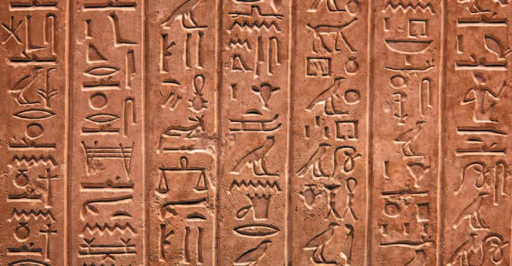
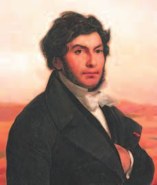
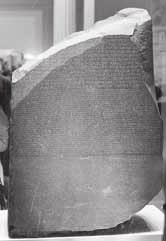
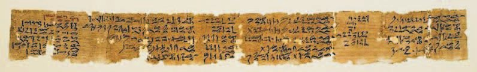
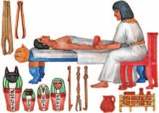
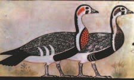
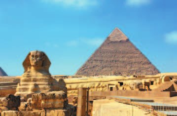

Тайна иероглифов
На стенах пирамид и других гробниц, на листах папируса сохранились таинственные знаки древнеегипетской письменности — .
Сами египтяне называли это письмо . Оно было трудным, и со временем его забыли.
Расшифровка иероглифов связана с именем французского учёного (1790—1832), одного из основателей . Он начал изучать — стелу с древнеегипетскими и древнегреческими письменами.
Две надписи на камне были сделаны иероглифами, а третья — греческими буквами. В греческой надписи упоминались имена царя Птолемея и царицы Клеопатры.
Шампольон предположил, что в иероглифическом тексте эти имена, как особо почитаемые, выделены овалом. Догадка оказалась правильной. Так у учёного появились первые расшифрованные знаки, а позже письменность была прочитана целиком.
Труды Шампольона нашли отклик и в России: его систему изложили в брошюре «О египетских письменах», изданной в Санкт-Петербурге в 1824 году.
На стенах пирамид и других гробниц, на листах папируса сохранились таинственные знаки древнеегипетской письменности — иероглифы. Это письмо в Древнем Египте называли «словами бога». Оно было трудным, и со временем его забыли.
Расшифровка иероглифов связана с именем французского учёного Франсуа Шампольона (1790—1832). Он начал изучать Розеттский камень — стелу с древнеегипетскими и древнегреческими письменами.
Две надписи на камне были сделаны египетскими иероглифами, а третья — греческими буквами. В греческой надписи упоминались имена царя Птолемея и царицы Клеопатры. Шампольон предположил, что в иероглифическом тексте эти имена, как особо почитаемые, выделены овалом. Это была правильная догадка. Так в распоряжении учёного оказались первые расшифрованные знаки древнеегипетской письменности, а позднее она была расшифрована целиком.
Труды Шампольона нашли положительный отклик в России. Его система была изложена в брошюре «О египетских письменах», изданной в Санкт-Петербурге в 1824 году.


- Каким образом была расшифрована древнеегипетская письменность?
1. Письменность придумали сами египтяне. Почему же потом её пришлось расшифровывать заново?
2. Чем именно помогла Шампольону греческая часть надписи?
3. Почему Шампольон начал именно с имён, а не с обычных слов?
Образование
Школы в Древнем Египте находились при храмах, а учителями были жрецы. Посещали школы только мальчики.
Изучали астрономию, математику, географию, историю и медицину. Писать иероглифы учились на полированных пластинках известняка, разграфлённых в линейку или в клетку. Иероглифов было несколько сотен: они изображали людей и их действия, животных, растения, предметы.
На начинали писать только на старшей ступени обучения — заострёнными тростниковыми палочками и разведёнными чернильными порошками разных цветов. На папирусе переписывали целые произведения.
Порядки были строгими. Вот наставление ученику: «Вставай на своё место! Книги уже лежат перед твоими товарищами. Читай прилежно. Не проводи дни праздно, иначе горе твоему телу! Пиши своей рукой, читай своим ртом, спрашивай совета того, кто знает больше тебя». Лентяев наказывали палками.
Окончивших школу считали образованными людьми — и таких в Египте было немного.
Школы в Древнем Египте находились при храмах, а учителями были жрецы. Посещали школы только мальчики. Они изучали астрономию, математику, географию, историю и медицину. На полированных пластинках известняка, разграфлённых в линейку или в клетку, мальчики учились писать иероглифы, которых насчитывалось несколько сотен. Иероглифы изображали людей и их действия, животных, растения, предметы.
Писать на папирусе начинали на старшей ступени обучения и делали это заострёнными тростниковыми палочками и разведёнными чернильными порошками разных цветов. На папирусе учащиеся переписывали целые произведения.
Порядки в школах были строгими. Наставление ученику предписывало: «Вставай на своё место! Книги уже лежат перед твоими товарищами. Читай прилежно. Не проводи дни праздно, иначе горе твоему телу! Пиши своей рукой, читай своим ртом, спрашивай совета того, кто знает больше тебя». Лентяев наказывали палками.
Окончившие школу считались образованными людьми, и таких в Древнем Египте было немного.
- Какую должность мог получить человек, окончивший школу? Объясни свой ответ.
4. Школы были при храмах, а учили в них жрецы. Вспомни §6—7: почему именно они, а не, скажем, вельможи?
5. Почему сначала писали на пластинках известняка и лишь потом переходили на папирус?
6. Почему образованных людей в Египте было немного, хотя школы существовали?

Научные знания
Для строительства пирамид и каналов нужна была математика. Она служила чисто практическим целям: строитель рассчитывал, сколько кирпичей уйдёт на дом, сборщик налогов — сколько зерна должен сдать земледелец, жрец — когда праздновать религиозные праздники.
Единицами длины служили части человеческого тела: палец, ладонь, ступня и . Четыре пальца составляли ладонь, семь ладоней — локоть, то есть расстояние от сгиба руки до кончиков пальцев.
Был у египтян и , похожий на современный. Год делился на 10 месяцев по 30 дней, а в конце года добавлялись 5 праздничных дней. Годы отсчитывали с момента вступления на престол очередного фараона.
Строение человеческого тела египтяне знали хорошо, но деятельности мозга значения не придавали. Думать, по их мнению, человек умеет сердцем: это главный орган, отвечающий за жизнь и поступки. Не случайно именно сердце взвешивали на весах на суде Осириса.
Медицину описывают многие папирусы. У врачей была строгая специализация: одни занимались носами, другие ушами, третьи ногами; были зубные врачи и настоящие хирурги. Рецептов в текстах множество, и разобраться в них трудно даже специалистам — медицина была тесно связана с магией.
Болезни делили на три степени: 1. Те, которые я буду лечить. 2. Те, с которыми я буду бороться. 3. Не поддающиеся лечению.
Большую роль в развитии медицины сыграл обряд бальзамирования: он помогал изучить строение человеческого тела и внутренних органов.
Для строительства пирамид и каналов были необходимы познания в области математики. Математика служила чисто практическим целям. Строитель рассчитывал, сколько кирпичей пойдёт на сооружение дома, сборщик налогов — сколько зерна должен сдать земледелец. Жрец производил расчёты, связанные с религиозными праздниками.
В качестве единиц измерения длины египтяне использовали части человеческого тела: палец, ладонь, ступню и локоть. Четыре пальца составляли ладонь. Семь ладоней равнялись одному локтю — расстояние от сгиба руки до кончиков пальцев.
У египтян существовал календарь, напоминающий современный. Год делился на 10 месяцев, по 30 дней в каждом. В конце года добавлялись 5 праздничных дней. Годы отсчитывали с момента вступления на престол очередного фараона.
Хорошо зная строение человеческого тела, египтяне тем не менее не придавали значения деятельности мозга. Весь мыслительный процесс приписывался сердцу. Это был, по мнению египтян, главный орган, отвечающий за жизнь и поступки человека. Не случайно именно сердце взвешивали на весах на суде Осириса.
Подробное описание медицинских опытов поведали многочисленные папирусы. Существовала строгая специализация. Были врачи, которые занимались носами, ушами, ногами. Были врачи, которые лечили зубы, а были и настоящие хирурги. При большом количестве рецептов, встречающихся в текстах, часто даже специалистам трудно разобраться в них, поскольку медицина, как никакая другая наука, была связана с магией. Заболевания классифицировались по трём степеням сложности: 1. Заболевания, которые я буду лечить. 2. Заболевания, с которыми я буду бороться. 3. Заболевание, не поддающееся лечению.
Большую роль в развитии медицинских знаний сыграл обряд бальзамирования (сохранения тела на длительный срок), который помогал изучить строение человеческого тела и внутренних органов.

- Какие единицы измерения существовали у египтян?
- Какими знаниями владели древние египтяне?
7. Учебник говорит, что египетская математика была «чисто практической». Приведи три примера из текста.
8. Меры длины брали с человеческого тела. В чём тут удобство и в чём неудобство?
9. Египтяне считали, что человек думает сердцем. Как это объясняет то, что происходило на суде Осириса (§9)?
10. Как обряд бальзамирования помог египетской медицине?
Искусство
Египтяне владели приёмами обработки дерева, глины, камня и металла — и создавали из них произведения искусства.
Скульптуру делали по определённым правилам. Мужчин изображали с более тёмным цветом кожи, чем женщин. Руки сидящего человека лежали на коленях. В руке обязательно был символ профессии: оружие, свиток, посох, корзина. Фараонов изображали намного крупнее остальных людей и с символами власти.
, которыми украшали дворцы и дома фараонов и вельмож, храмы и гробницы, ярко передают жизнь разных людей египетского общества.
Архитектура Египта — это колоссальные сооружения: храмовые комплексы, пирамиды, гробницы фараонов в скалах.
В древности считали, что есть : число семь у египтян и у многих других народов было священным. Одно из чудес находится в Египте — это самая высокая пирамида, 147 метров, фараона , которого греки называли Хеопсом.
Строительство шло около 30 лет, участвовали тысячи человек. Пирамида сооружена из каменных блоков весом от 2 до 30 тонн. Рядом с ней стоит Большой сфинкс — вырубленный из скалы лев с лицом царя : длина 57 метров, высота 20.
Как это делали? Сначала расчищали и выравнивали площадку. Известняк для остова вырубали прямо на месте: медными резцами и клиньями рабочие отделяли блок от скалы. Ни лебёдок, ни других подъёмных сооружений не было — камни затаскивали по наклонной плоскости.
Внутри строили систему погребальных камер и коридоров. Даже массивный гранитный саркофаг ставили в камеру до того, как делали перекрытия. Когда внутренние помещения были готовы, пирамида снаружи ещё напоминала высокую плоскую платформу, окружённую наклонными насыпями. Потом каменщики выравнивали облицовку так, чтобы ни один блок не выделялся, насыпь становилась всё ниже — и в конце пирамида представала отшлифованной и сияющей.
Сколько времени на это уходило? Геродот сообщает: 20 лет, и на перевозке камня трудились 100 тысяч человек «на периоды по месяцам» — это 400 тысяч человек в год. Современные исследователи считают, что цифра завышена.
Древние египтяне владели приёмами обработки дерева, глины, камня, металла. Из них они создавали произведения искусства. Скульптурные изображения в Древнем Египте выполняли по определённым правилам: мужчин изображали с цветом кожи более тёмным, чем у женщин. Руки сидящего человека лежали на коленях. В руке скульптуры присутствовал символ профессии изображённого человека — оружие, свиток, посох, корзина. Фараонов изображали намного крупнее, чем других людей, и с символами власти. Рельефы, которыми древнеегипетские мастера украшали дворцы и дома фараонов и вельмож, храмы и гробницы, ярко передают особенности жизни разных представителей древнеегипетского общества.
Архитектура Древнего Египта часто представлена колоссальными сооружениями. Это храмовые комплексы, пирамиды, гробницы фараонов в скалах.
Люди в древности полагали, что существует семь чудес света. Египтяне, как и многие другие народы, считали число семь священным. Одно из чудес света находится в Египте. Это самая высокая (147 метров) пирамида фараона Хуфу (греки называли его Хеопсом). Её строительство шло около 30 лет, в нём участвовали тысячи человек. Пирамида Хеопса сооружена из каменных блоков, вес каждого из них от 2 до 30 тонн.
Прежде чем завезти камень, надо было расчистить и выровнять площадку. Для сооружения остова пирамиды использовался известняк, его вырубали прямо на месте. Медными резцами с помощью клиньев рабочие отделяли блок от скалы. У строителей не было ни лебёдок, ни других подъёмных сооружений, поэтому камни надо было затаскивать по наклонной плоскости.
Внутри пирамиды, в центре, строилась система погребальных камер и коридоров. Даже массивный гранитный саркофаг устанавливался в погребальную камеру до того, как были сделаны перекрытия. Когда внутренние помещения гробницы были готовы, внешне она всё ещё напоминала высокую плоскую платформу, стороны которой были окружены наклонными насыпями. Каменщики, облепив со всех сторон пирамиду, выравнивали облицовку так, чтобы ни один блок не выделялся на фоне соседних. Наклонная плоскость становилась всё ниже и ниже, каменщики, продолжая работу, доходили наконец до самых нижних слоёв камня, и пирамида представала взору во всей своей красе, отшлифованная и сияющая.
Сколько же времени требовалось для возведения пирамиды? Геродот сообщает, что с момента начала работы до её окончания проходило 20 лет, на строительстве трудились 100 тысяч человек «на периоды по месяцам» для транспортировки камня. Это означает 400 тысяч человек в год. По расчётам современных исследователей, вероятно, эта цифра завышена.


- Когда и для кого была построена самая знаменитая пирамида в Египте?
11. Фараона изображали намного крупнее остальных людей. Вспомни §6—7: что этим хотели сказать?
12. Зачем в руку статуи вкладывали символ профессии, если человек и так изображён?
13. Учебник говорит: пирамиду строили около 30 лет. Геродот — 20 лет и 100 тысяч человек. Почему историки не верят Геродоту на слово?
14. Внутри пирамиды саркофаг ставили до того, как делали перекрытия. Почему нельзя было наоборот?
Подведём итоги
- Как возникла письменность древних египтян?
- Как проходило обучение в Древнем Египте?
- Какие науки были развиты в Древнем Египте? Как ты думаешь, почему?
- Какое из чудес света было создано древними египтянами? С какой целью?
- В каких видах искусства египтяне добились наибольшего мастерства?
Прочитай список понятий: медицина, иероглифы, налоги, пирамиды, папирус. Какое из них не относится к теме параграфа? Объясни почему.
Сформулируй ответ на главный вопрос параграфа — что свидетельствовало о высоком уровне развития науки и искусства в Древнем Египте? Приведи два-три довода.
Проверь себя
Нажимай по очереди — от первого шага к последнему.
1. Что помогло Шампольону расшифровать иероглифы?
2. Кто учился в египетских школах?
3. Чему равнялся египетский локоть?
4. Какой орган египтяне считали главным для мыслей и поступков?
5. Как на статуе можно было узнать профессию человека?
6. Какой высоты пирамида Хеопса?
Расскажи вслух
Тайна иероглифов
- Иероглифы на стенах гробниц и на папирусе; египтяне звали письмо «словами бога»; оно было трудным и забылось.
- Шампольон и Розеттский камень: две надписи иероглифами, третья греческими буквами; в греческой — Птолемей и Клеопатра.
- Догадка про овал вокруг почитаемых имён оказалась верной; потом расшифровали всю письменность; в России труды издали в 1824 году.
Школа в Древнем Египте
- При храмах, учителя — жрецы, учились только мальчики; изучали астрономию, математику, географию, историю, медицину.
- Писали сначала на пластинках известняка в линейку и клетку, на старшей ступени — на папирусе тростниковыми палочками.
- Строгие порядки, наставление ученику, лентяев били палками; окончивших школу было немного, их считали образованными.
Что знали египтяне
- Математика для дела: кирпичи, зерно, праздники. Меры длины с тела: палец, ладонь, ступня, локоть (7 ладоней).
- Календарь, похожий на современный; годы считали от вступления фараона на престол.
- Мозгу значения не придавали, думает сердце — отсюда и весы на суде Осириса. Медицина со специализацией врачей, три степени болезней; бальзамирование помогло узнать строение тела.
Искусство и пирамида Хеопса
- Правила скульптуры: цвет кожи, руки на коленях, символ профессии в руке, фараон крупнее всех.
- Архитектура колоссальная: храмовые комплексы, пирамиды, гробницы в скалах; рельефы на стенах.
- Пирамида Хуфу (Хеопса) — 147 метров, блоки 2—30 тонн, около 30 лет; ни лебёдок, ни подъёмников — только наклонные насыпи; Геродот называл 20 лет и 100 тысяч человек.